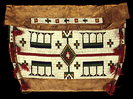

The Minneapolis Institute of Arts
Main Menu ~ Permanent Collection List ~ Interactive Museum Maps ~ Back ~ Next
Art of the Americas
 (c) 51k
Visit Art of the Americas, the first of the newly created galleries of the reinstallation project. Here you can study objects made by native peoples of North, Central and South America from ancient to modern times. This collection includes an interactive program.